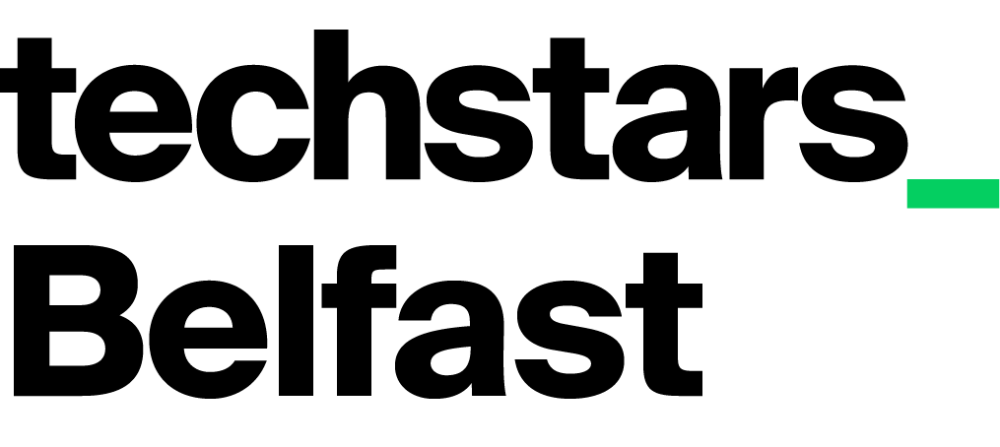

This is a working draft of what was said when sixty people — founders, investors, programme leads, agency teams, university commercialisation officers, ecosystem builders — sat down at eight tables in Belfast and tried to answer one question: what does it actually take to build a company in Northern Ireland, and where is the system letting founders down?
It is structured around the Seven Capitals framework from Brad Feld and Ian Hathaway's The Startup Community Way. The framework forces us to look past the loudest complaint — financial capital — and into the quieter capitals that often decide whether a community compounds or stalls.
Three things to know before you read on. First, founders prefaced almost every critique with gratitude; this report tries to keep that tone. Second, all names of speakers, companies, and third parties have been removed — the voices stand by their roles. Third, this is a draft, not a verdict; the open questions at the back are an invitation to keep the conversation going.
And the surplus itself has a quiet flaw the ecosystem has not yet named: founders are generous with introductions but inconsistent with follow-through.
In Feld's terms, there is no shortage of warmth, generosity, or willingness to help. The senior operators, the warm-intro culture, the give-first instinct — the network and cultural capitals at their best — are visible everywhere in these conversations.
What is missing is twofold. First, the institutional infrastructure that would protect founders who haven't yet earned access to that warmth: a public best-practice guide, a legible map of the support landscape, governance standards for who can claim to be supporting founders. Second, the cultural discipline that turns warm intros into compounding outcomes — the simple act of following up.
One senior operator estimated that warm intros take him 45 minutes to do well, and that the majority of his introductions never produce a follow-up conversation by the recipient. That is a cultural-capital problem: the surplus the ecosystem rightly prides itself on is being partially wasted at the user end.
The financial-capital complaint that often dominates these conversations elsewhere — "we don't have enough money here" — is present in the NI conversation but blunter than expected. There is enough capital, particularly when you include cross-border SEIS-eligible angel money from Dublin, RoI, and London. The binding constraints are legibility (founders can't find their way into the system) and discipline (founders aren't always making the most of the system once they're in).
When founders complain "there isn't enough capital here," they almost always mean financial capital. But financial is only one of seven. Feld and Hathaway argue the first three (intellectual, human, financial) are the visible inputs — ideas, talent, money. The other four (network, cultural, physical, institutional) are infrastructure running quietly in the background. Often the binding constraint is one of those quieter four.
The frame disciplines the analysis. The temptation when summarising founders is to organise around the loudest complaints; this lens makes us look at the quiet places too. The capitals that aren't being talked about may be the most important finding of all.
The most discussed capital across all three recordings — and, paradoxically, the one founders are most polarised on. Once inside the network, the experience is uniformly positive: warm, generous, transformational. Getting inside is the hard part. The Northern Ireland ecosystem is, in effect, hidden from outside it.
Three sub-themes from the original pass have strengthened; three more have surfaced. Together they redraw the picture: the binding constraint isn't that there's no money, it's that the money is unevenly priced, awkwardly accessed, and — for a new kind of company — increasingly optional.
The ratchet quote is publishable but should be framed: it's about NI's recent past, not present-day behaviour. The bootstrap-vs-raise debate is the section that will most divide an INI-stakeholder audience — present it as live and unresolved, with founder voices on both sides.
The cultural undercurrents are the most consequential capital running quietly in the background. The data sharpened three of them.
Notes for synthesis. Cultural capital is hard to write about without sounding abstract. The way to make it concrete is to show specific behaviours — the warm intro offered live, the mentor on a council programme, the run club deliberately created to push back against AI-mediated networking — and let those examples carry the meaning of "culture" without using the word.
Institutional capital in NI is, by international comparison, substantial. Founders in the room repeatedly acknowledged this. The friction is not in the quantity — it's in the legibility and the front door.
The Invest NI section is sensitive — they're a key partner. The strongest move is to treat the front-door story as constructive, evidence-based feedback worth acting on. It's delivered by founders who otherwise had warm things to say about NI's institutional generosity; corroborated across tables; and there are willing founders inside the room who can help redesign it. The fact that other founders immediately offered warm introductions to specific INI contacts is a generous detail worth keeping — the ecosystem's relational machinery working around its formal one.
A consistent message: capability is being acquired through chance, not design. The right mentor, the right programme, the right warm intro — these are still the dominant transmission mechanisms.
A live and visible tension has emerged here, and we publish it as a tension rather than smooth it over. Both speakers below are credible. Both are right within their frame. The community has not yet built shared language to distinguish them — and naming that gap is this report's contribution.
The angel's position reflects the historical model: linear time-for-money. The founder's reflects what AI has changed: productised services with software-like margins. The ecosystem has not yet developed the language to distinguish "old-style consultancy" from "AI-native services". That language gap is itself the intellectual-capital observation.
Investors and founders are working different definitions of defensibility in real time — proprietary data, embedded workflow, UX, regulatory positioning. None of the speakers were satisfied with the answer. The healthy ecosystem response is to support live thinking — peer fora, founder-investor cross-talk — rather than producing premature canonical answers.
For three full hours of recorded conversation, no founder talked about Belfast as a place. That's not because the place isn't an asset — it's because the place is taken for granted. A startup community that has stopped seeing its own backdrop has lost a narrative tool.
Founders did not talk about Belfast as a place, didn't reference physical hubs as differentiators, didn't discuss density or co-location as advantages — even when prompted by a facilitator who explicitly raised "density" as a feature of NI.
The closest physical-capital moment was incidental: a founder mentioning they chose Belfast over Dublin because it was "a lot more affordable than Dublin". A quiet positive — surfaced as one sentence, in passing, not as a frame.
Feld and Hathaway specifically argue that physical capital — quality of place, density, infrastructure — runs in the background of the most successful startup communities and is often underestimated. Boulder's identity as a place is, in their writing, inseparable from its identity as a startup community.
The third hypothesis is the most useful. Belfast has real physical-capital assets — Ormeau Labs, Catalyst Inc, university corridors, compactness, affordability vs Dublin / London — that are not being deployed as part of NI's startup-community story.
Almost every friction in the dataset can be reframed as an asymmetry problem. The ecosystem's strongest interventions all close this asymmetry for founders inside them. The opportunity is to extend the same protection to founders outside.
Synthesised from founder suggestions and analyst observations. The strongest recommendations are interventions that use surplus network and cultural capital to build codified institutional and human capital — Feld's leverage move.
| # | Recommendation | Capitals | Force |
|---|---|---|---|
| 01 | Publish a public-domain "Founder Best Practice" guide.Fundraising hygiene, term-sheet red flags (with historical ratchet examples), advisory norms, sweat-equity cap-table hygiene, the "ask for advice, get money" rule. Written by founders. One findable place. Referenced from every programme. | #cultural #institutional #financial #human | High |
| 02 | Build a single, founder-stage-aware map of the support landscape.A decision tree, not a brochure. Include an inter-programme catch-net: when a founder applies to one programme and isn't a fit, route them onward. | #institutional #network | High |
| 03 | Stand up a persistent NI-wide founder peer infrastructure.Modelled on the Lithuanian Unicorn Association. Mix Series B founders with first-time founders. Cross all accelerator alumni groups. Anchor in Catalyst / Founder Labs / Ormeau Labs jointly. | #network #cultural #human | High |
| 04 | Simplify the on-ramp to Invest NI for already-trading exporters.An alternative to the long web form for companies with demonstrable traction. The current intake is filtering out the wrong founders; that finding is corroborated. | #institutional | High |
| 05 | Re-examine grant architecture.Reward capital efficiency rather than encouraging founders to default to the maximum. Anticipate AI-driven volume increase by updating selection methods. | #financial #institutional #intellectual | Med-High |
| 06 | Increase cadence of women-founder programmesto quarterly or rolling. Ensure investment panels include relevant market context, and explicitly address question-asymmetry (the "where's the CTO?" pattern) in panel training. | #human #cultural #financial | High |
| 07 | Build recognition and tailored support for AI-native services.Not the same as old-style consultancy. The ecosystem needs shared language and shared eligibility criteria. | #intellectual #financial #institutional | Med-High |
| 08 | Treat scaled-exit alumni as a deliberate strategic asset.Cloudsmith and a small number of others are the candidate "founder mafia" networks. Annual alumni convening; deliberate pairing of exited founders with first-time founders — before alumni dissolve into private life. | #human #network #cultural | Med-High |
| 09 | Earlier-stage exposure— bring the existence of the ecosystem into school, college, and university. Specifically address fear of failure and cultural status of technology talent. | #human #cultural #network | Medium |
| 10 | Embed warm-intro follow-up etiquette into accelerator onboarding.When someone makes you a warm intro, you owe them a closing-the-loop note within a week. Make it explicit. Costs zero. Protects the network's compounding engine. | #cultural #network | Med-High |
| 11 | Specialist advisory pools.Accountancy and legal support for holding-company structures, exit planning, tax-efficient bootstrapping, cross-border (NI/RoI/UK) capital structuring, sweat-equity hygiene. | #human #institutional #financial | Medium |
| 12 | Curate a senior-advisor poolof experienced ex-operators willing to mentor next-generation founders, by warm introduction. | #network #human #cultural | Medium |
| 13 | Diversify ecosystem storytelling.Surface a broader range of company shapes — bootstrapped, services-led, profitable-without-VC, scale-via-acquisition, AI-native, women-led, deep-tech-from-life-sciences. | #intellectual #cultural | Medium |
| 14 | Surface place as a narrative asset.Belfast's affordability vs Dublin, hub density, university-corridor compactness, ease of cross-border travel — real physical-capital advantages founders aren't currently using in their own stories. | #physical #cultural | Low-Med |
Convened by Techstars Belfast. Drafted from recordings of the Community Development Lab held in Belfast, May 2026. Framework draws on Feld & Hathaway, The Startup Community Way (Wiley, 2020). All names of speakers, companies, and identifying third parties have been removed; voices stand by their roles. Quotes lightly cleaned for readability — fillers, false starts, and transcription errors removed; voice, phrasing, and meaning preserved. This is a working draft for circulation; comments and corrections welcome.